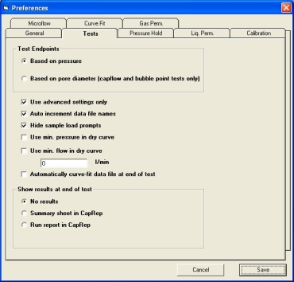

Capwin now offers the ability to automatically curve-fit a data file as it is created at the end of a test. This option is located in the Preferences window under the Tests tab:
Check the box next to Automatically curve-fit data file at end of test to turn this feature on.
Next, click the Curve Fit tab. This will allow you to change the settings for curve fitting:

1. Enter the number of data points used in the fitting function (3 to 10 points).
2. Enter the maximum percentage error. This defines how much deviation from the fitted curve a specific data point may have.
3. Enter the maximum pressure difference between adjacent data points. This determines whether additional data points will be interpolated into the file.
When finished, click Save to save the test options.
Until the automatic curve fit is turned off, each test run on the porometer system will result in a curve-fitted data file.
WARNING: If a data file is automatically curve-fitted, the flow and pressure values recorded may not correctly reflect the actual values measured during the test. The curve-fitted data file is a smoothed-out representation of the data. The original values are not preserved.
| Back | Next |